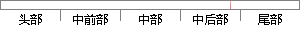

它让我们可以使用HTML作为模板语言并且可以通过扩展的HTML语法来使应用组件更加清晰和简洁。
片段位置图

相似结果|
相似片段 1：。AngularJS是一款来自Google的开源前端JavaScript框架【35】，适合于开发单页面应用的W-ebApp，它允许开发者使用HTML作为模板语言，通过对HTML语法的扩展，更加清晰、简洁
|
※ 片段修改建议 ※
近似词参考：- 使用：利用
- 语言：说话
- 并且：而且
- 通过：经由过程
- 扩展：扩大
- 应用：利用 运用
- 更加：加倍 越发 更为
- 清晰：清楚
- 简洁：简练 简便
系统自动生成语句：它让我们可以利用HTML作为模板说话而且可以经由过程扩大的HTML语法来使利用组件加倍清楚和简练。
注：本片段修改建议为系统自动生成，仅供参考。